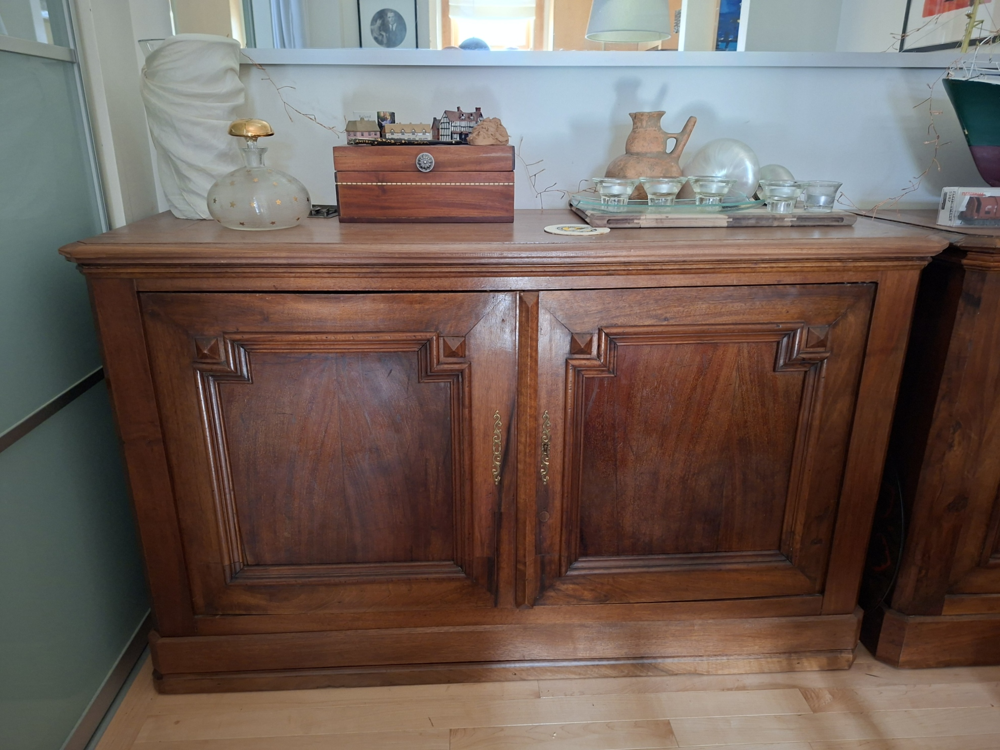
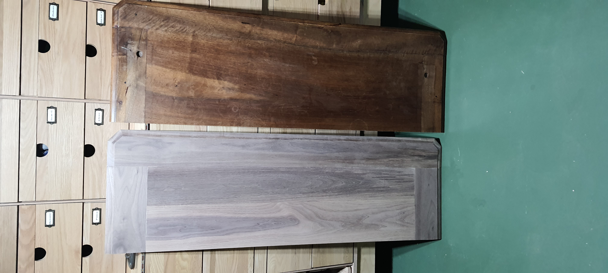

Les deux meubles de la salle à manger proviennent du sud de la France, région des Cévennes. Les deux sont modifiés et en termes de hauteur et de largeur pour obtenir des dimensions très similaires. Un travail de confection de portes pour l’un des buffets a été réalisé de même qu’un plateau. Il s’agit d’un projet qui nécessite patience et minutie. Le plateau a été réalisé avec du noyer noir.

